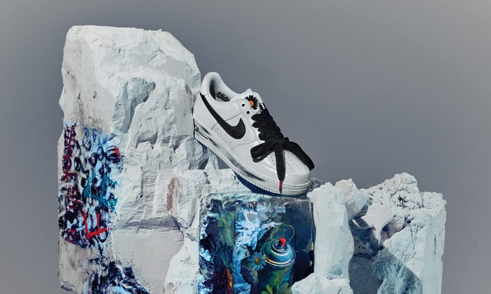
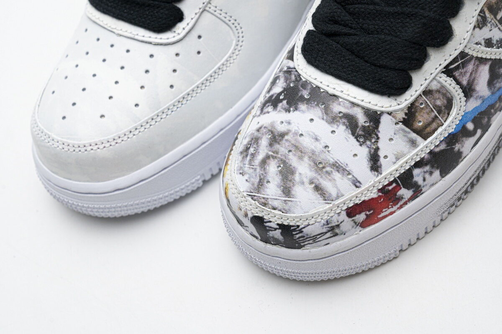
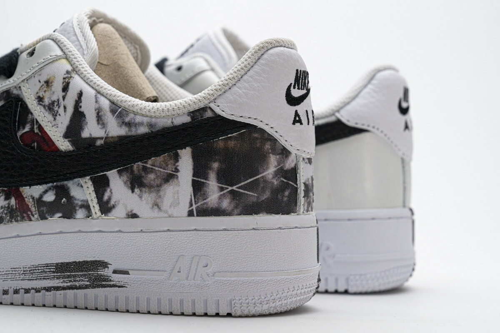

PMO
👑 Welcome to PeaceMinusOne!
AN OFFICIAL LOOK AT G-DRAGON’S PEACEMINUSONE X NIKE AIR FORCE 1 “PARA-NOISE 2.0”
☘ Intro
The PEACEMINUSONE x AF1 “Para-Noise 2.0” reverses the color scheme with a focus on a clean white tone while retaining the self-expressive character of its predecessor. The design theme reflects G-Dragon’s views on self-actualization as a way through challenging times, a mindset he calls “YOUTOPIA.”
“Even though everything is uncertain these days, we shouldn’t stop expressing ourselves as the way we are, and creating our own world,” says G-DRAGON. “With these footsteps being connected, we will find our utopia spreading in front of our eyes. I dream of every one of you expressing yourselves freely in the Youtopia that you create for yourselves.”
👩🏽🚀 Projects
The shoe features a white-tone painted premium leather upper that peels-away revealing an original artwork once again inspired by G-Dragon’s sense of optimism towards art as a form of self-expression for youth around the world to be unified through collective creativity. The shoe also features contrasting black tumbled leather Swoosh branding and black embroidered daisy motifs at the tongue, eyelet pins and branded thick laces. Rounding up the design of the collaboration is a matching white lining, printed insoles and a white AF1 sole unit dressed all over with haphazardly applied strokes of black paint.
🏆 Accomplishments
The second version of Paranoise was not sold simultaneously across the world. Rather, it had staggered releases. Some countries had a first come first serve basis, while in some they had to sell it through lotteries or draws as there was too much demand for the shoes. The Nike website even crashed because of the volume of people going ot the site. The battle for the shoes was not just for fans, but for sneakerheads too as they saw the value of the Paranoise.
I only wear clothes because I can't walk around with nothing on, but they started calling me a fashionista.
-G-Dragon
🌮 G-Dragon’s PEACEMINUSONE x Nike Air Force 1 “Para-Noise 2.0”



Thank You,
Stay Tune For More!